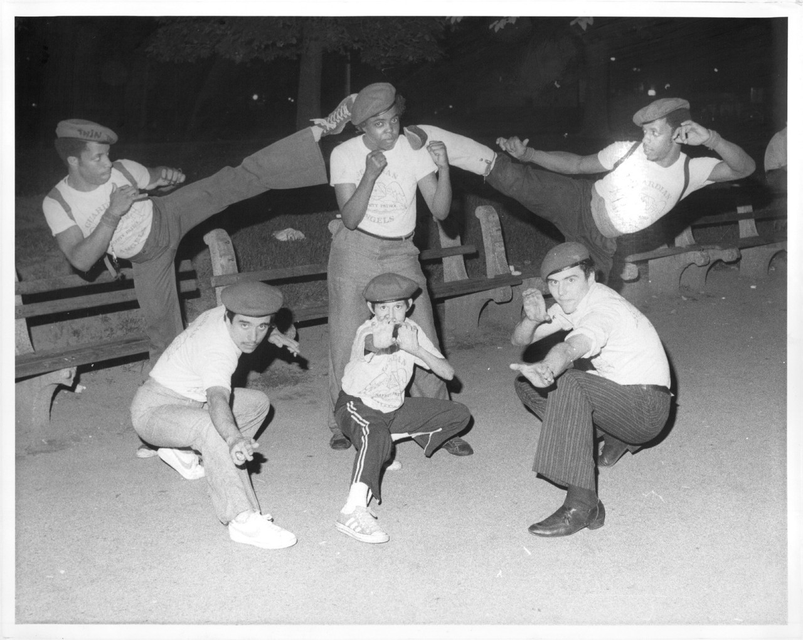

Beacon Theatre, 1989

2nd Ave and 96th, 1985
Beacon Theatre, 1989
Times Square, 80s style.
2nd Ave and 89th, 1986
2nd Ave and 96th, 1985

Bowery and Bleecker, 1981

Classic Zephyr

Daze 1983
Bus surfing in the 70s

Guardian Angels posing in Central Park, 1979

The Commodore Hotel, East 42nd St, 1970s

88th and Broadway, 1983

72nd Street in the 80s